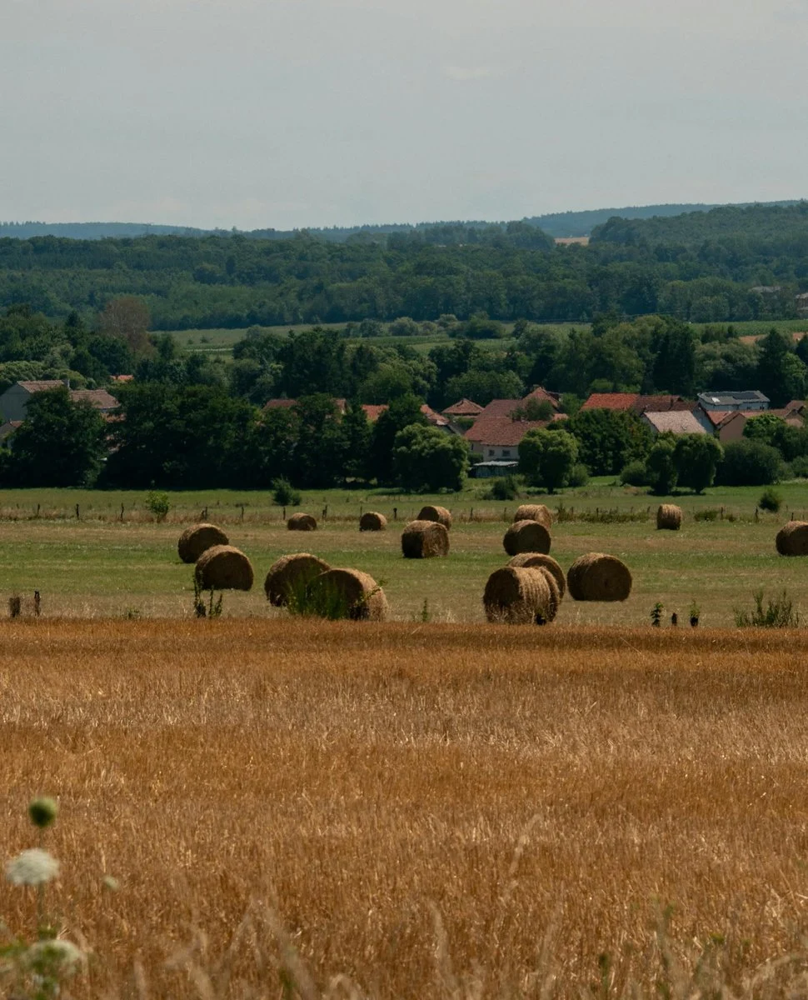

Publication sur X
Après la Semaine pour les alternatives aux pesticides, agir durablement
Date de publication sur X · 30 mars 2026
Repères éditoriaux
Nous avons défendu des règles et des moyens qui permettent de réduire durablement l’usage des pesticides.
Texte de la publication sur X
La « semaine sans pesticides » se termine. Et demain ?
Il faut plus que des semaines de sensibilisation dans une France qui autorise 63 000 tonnes de pesticides par an. Il faut des lois.
Il faut des cadres durables. https://t.co/muaHaPbsV0

Sources
PCF 79 · @79Parti sur X · AR-0005-TW-2038481373011313107
À lire aussi · Solidarité avec des camarades de la Confédération. Un lien vidéo